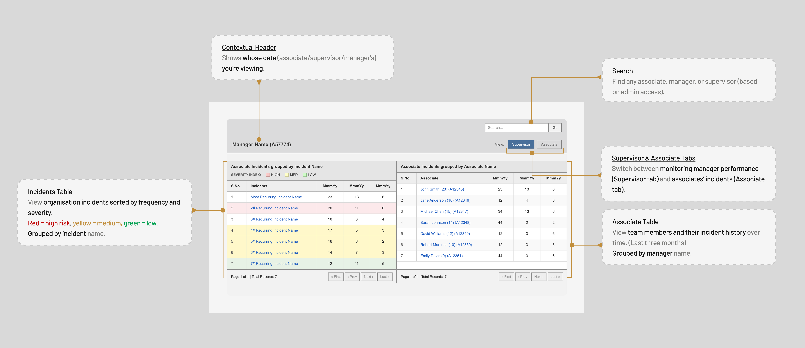
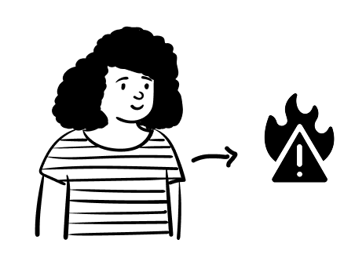
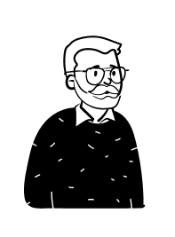
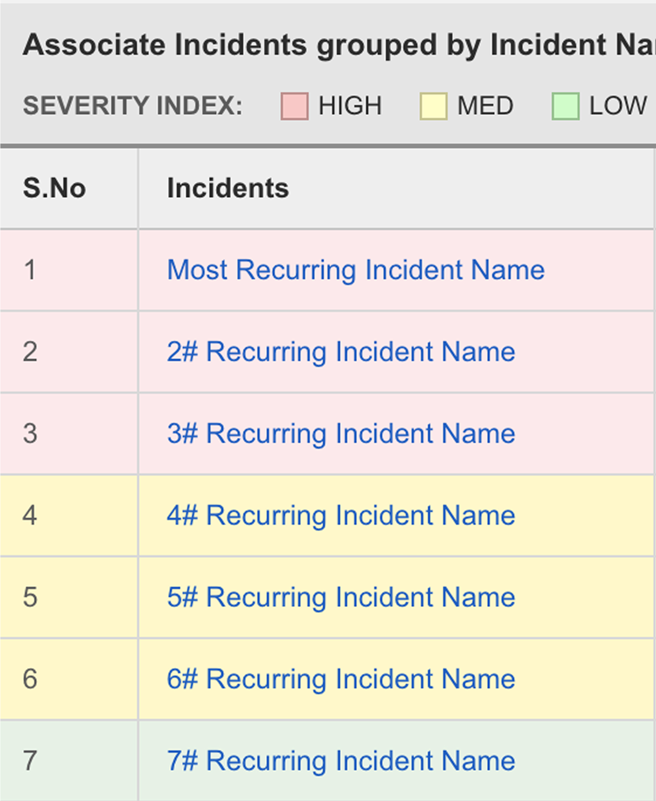
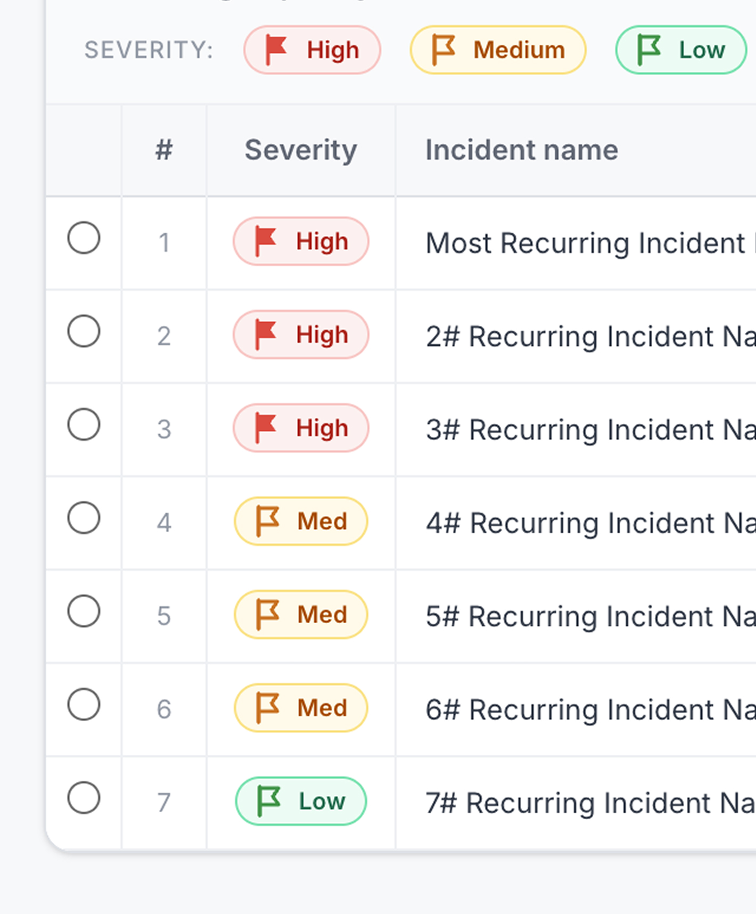

Supervisory Workstation
Improving Supervisory Workflow Efficiency in a Compliance-Critical Enterprise System
Screens shown are simplified recreations due to confidentiality constraints.
Context
Fidelity Investments was migrating enterprise applications from third-party platforms to Microsoft PowerApps to reduce operational costs and ensure secure handling of regulated data.
Supervisory Workstation was one such application, used by over 4000 employees in the company to monitor and manage their associates on compliance.
System & Users

The legacy supervisory workstation interface — key components and functional structure.

ASSOCIATEAn associate performs compliance violation. This violation is flagged as an incident in the Supervisory Workstation.

MANAGERThe associate’s manager monitors these incidents and performs “review” on the associate using Supervisory Workstation.
The supervisors (manager's manager) ensure the manager completes required reviews within regulatory cycles using Supervisory Workstation.
Identified Problem
I conducted observational walkthroughs, interviews and heuristic analysis to learn about the workflows, use cases & challenges in the old system.
The system lacked interaction consistency. Identical triggers produced different outcomes, requiring users to rely on recall leading to steep learning curve.
Completing a task like identifying high-risk associate involved many clicks to drill-down, closing modals, and windows. This increased interaction cost particularly for a task that is performed frequently.
Despite the relevancy of surfaced data, observational studies revealed that users consistently followed a investigative path: Overview → Detail → Action. During this task, they did not engage with any other surface data.
Ideation Strategy
The core problem was a structural mismatch between how the system was built and how users actually investigated cases. The redesign had to be executed entirely within PowerApps' low-code architecture, which meant relying on standardized components and rigid interaction models. So, I anchored the redesign around these core design principles
Standardize interaction patterns
Ensure consistent trigger-response behavior to reduce cognitive load.
Rapid learnability
Prioritise recognition-based interactions to minimize reliance on formal training.
Reduce interaction cost
Minimize navigation depth and modal interruptions.

Design within constraints
Leverage reusable components and feasible interaction patterns compatible with PowerApps architecture.
Iterations & Testing
I collaborated closely with Business Analysts to align the redesign with regulatory requirements and with engineers to validate feasibility within PowerApps’ low-code architecture. Because this was a redesign of a legacy tool, I conducted early concept testing to evaluate usability and mitigate adoption risk before development.
Designing for the Investigation Flow
Introduced a two panel layout, where on left there is big picture view and on the right detailed drill down.
Associate and Incident tables are tabs, user can focus on one view fitting their investigating workflow behavior.
Testing results
Unintuitive interaction
2/5 users hesitated at the interaction of selecting a row to see details.
100% Task success
Once exposed to the interaction pattern, 5 of 5 participants completed the task significantly faster.
Learnability
The interaction improved efficiency but wasn’t intuitive for first-time.
Embedded Learnability
I introduced a no-click default instructional state. This allowed users to grasp the interaction organically during use.
Rationale
Testing revealed 5 of 5 participants learnt the interaction and completed the task significantly faster.
Although a tooltip-based onboarding flow was explored, it required additional development effort within PowerApps’ constraints and was deprioritized.
Solution Overview
Screens shown are simplified recreations due to confidentiality constraints.
Inconsistent interaction patterns
Identical triggers resulted in different outcomes (modal, expansion, navigation), requiring reliance on recall. Modal overlays disrupted workflow continuity and focus as it required repeated modal closures.
Standardized interactions with reduced navigation depth
Implemented consistent drill-down pattern: Overview → Detail.
The layout preserved visibility between summary and detail, minimizing context switching.
Inaccessible design affordances
Severity was primarily conveyed through color, limiting accessibility.

Accessible design
Severity indicators use color, text, and iconography to ensure clarity across diverse visual abilities.

Overloading data & divided attention
Incident and Associate tables were displayed concurrently, increasing visual density and splitting user attention.
Focused view through contextual tabs
Incident and Associate tables were separated into focused tabs, reducing cognitive overload and aligning with observed investigation behavior.
Reflection
Advocating UX
I learnt that advocating for UX in low-mature enterprise ecosystem requires reframing design decisions in terms of operational efficiency. When I positioned friction as lost employee time rather than heuristic/ux principle, stakeholder alignment became significantly easier.
Tradeoff decisions
Designing within PowerApps’ low-code constraints challenged me to prioritize scalability and feasibility. This constraint sharpened my ability to make deliberate trade-offs rather than pursue idealized solutions.
Setting handoff templates
To support implementation clarity, I introduced structured handoff templates tailored to engineering workflows, which reduced ambiguity and improved delivery efficiency.